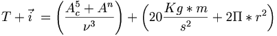
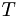
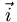
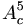
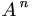
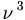
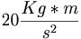
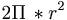

De: La Frikipedia, la enciclopedia extremadamente seria.
De: La Frikipedia, la enciclopedia extremadamente seria. De: La Frikipedia, la enciclopedia extremadamente seria.
Es una cualidad de todos los cuerpos (sí, ¡hasta del tuyo!) la cual hace que el cuerpo se resista a cambiar el estado de lo que estaba haciendo, empujándolo a continuar indiferentemente si lo que se hacía era bueno o malo; por ello no se debe confundir con la conciencia (voz que intenta evitar que cometas cosas estúpidas, actualmente están extinguidas) o grillos parlantes.

La descubrió un tal Newton que luego de que una manzana o alguna otra fruta lo golpeara en la cabeza, puesto qué (según la Teoría Animista) dicha fruta/alimento/cosa se quería quitar la vida.
Newton se recostó a un árbol luego de una noche de juerga en compañía de Galileo, se disponía a dormir cuando fue víctima del ataque de la manzana suicida (¿Me huele a EMO?), Newton se cabreo tanto que se sintió obligado a buscar a alguien para buscarle bronca al no encontrar a nadie y al borde de ponerse en posición fetal de la rabia tuvo una gran idea inventar algo a lo que pueda echarle la culpa de allí surgió la gravedad.
Newton, casi de inmediato se hizo famoso por lo que las entrevistas lo acosaban y tuvo que continuar su farsa sabiendo que la gravedad por sí sola no le salvaría de sus falacias por lo que tuvo que inventar palabras más raras aún entre ellas la de inercia.
Con la cual formó la modestamente llamada Primera Ley de Newton.
La inercia se manifiesta en muchos casos entre los cuales se pueden ejemplificar:
Como se puede ver la inercia no es otra cosa más que otra espina en el trasero de nuestra vida, pero a pesar de todo se puede calcular las molestias que te causará con una simple ecuación:

Donde:
 serías tu (obvio ¬¬).
 sería la inercia misma (sobra decir: obvio ¬¬).
 es la pequeñez de tu acción elevada a la 5.
 es el número de tus amigos presentes elevado a la cantidad de cámaras dispuestas a grabarte.
 equivale a una vergüenza estándar al cubo.
 vendría siendo la fuerza con la que tu padre te dará las nalgadas por la metedura de pata.
 representa la circunferencia de tu trasero. (Ya he dicho trasero 3 veces...y con esta 4 ^^)
Yo no sabía ni jota de este artículo hasta que leí (o intente leer) esto
| | |||
|
Materia
Magnitudes
Mecánica
Cinética y Dinámica
Energía
Física Cuántica y Nuclear
Científicos
|
Autor(es):